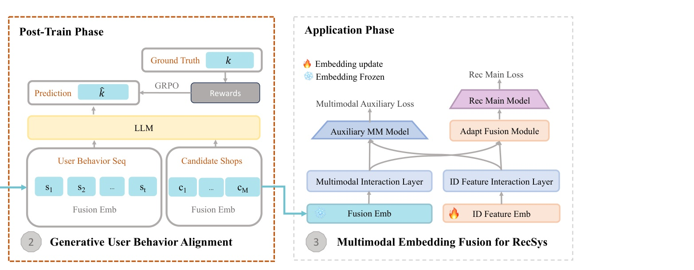
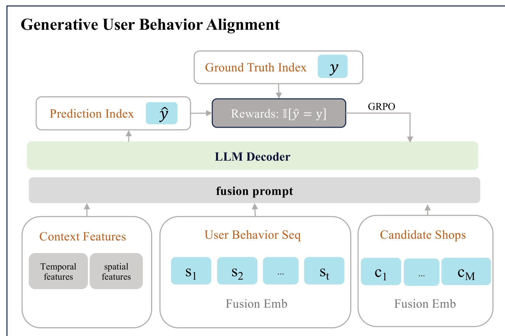
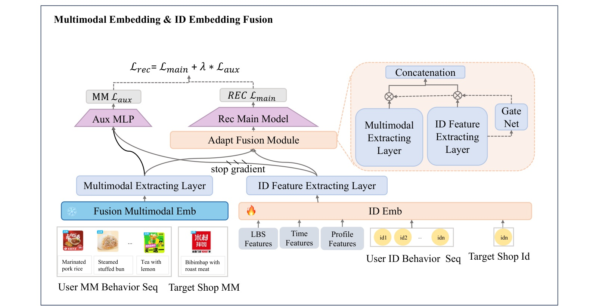
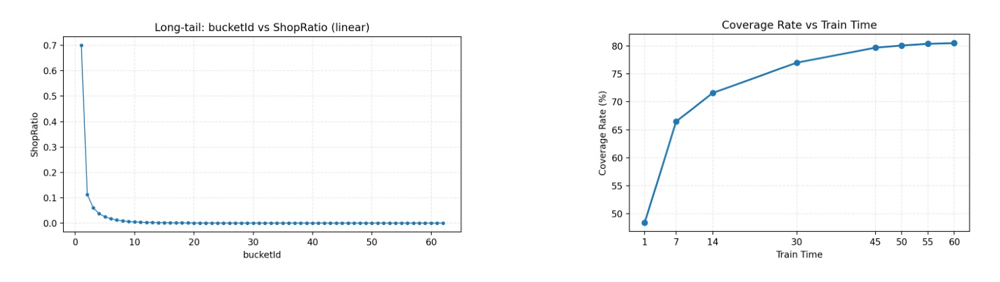
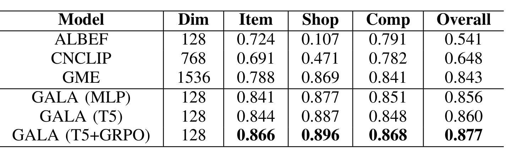
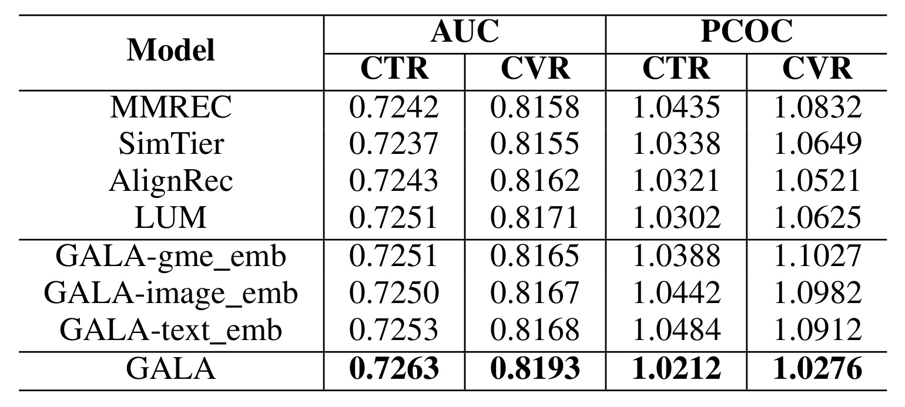
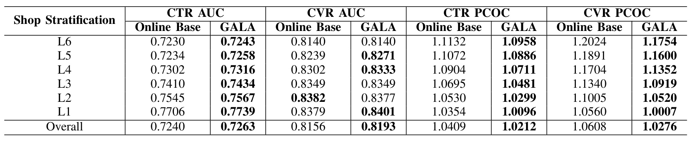
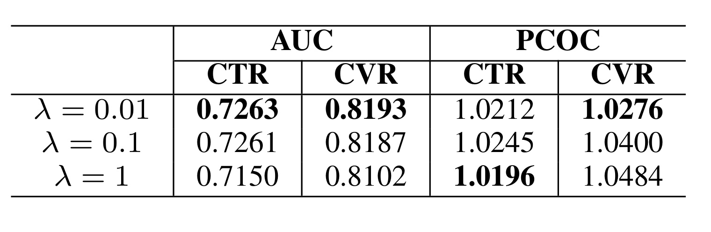
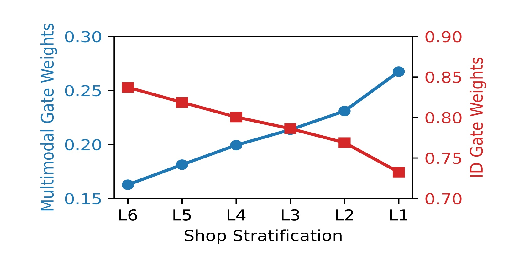
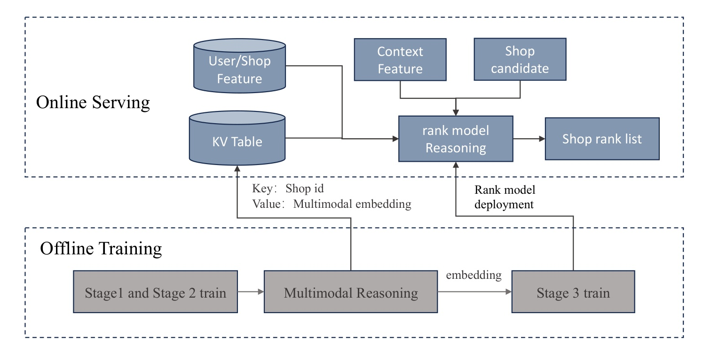

GALA：淘宝闪购推荐中的生成式对齐多模态表示学习
《GALA: Generative Aligned Learning for Adaptive Multimodal Representation in the Taobao Shangou Recommender System》是一篇面向工业排序的多模态推荐论文。第一作者 Jiping Liu 来自 Rajax Network Technology（阿里淘宝闪购），Central South University 参与合作；论文以 ICDE 2026 Industry and Applications Track 工作形式公开，唯一入口为 arXiv:2607.29213。作者没有提供可独立核验的官方代码仓库，因此本文能复核的是论文披露的模型链路、数据口径和实验数字，无法据此判断内部实现的完整可复现性。
GALA 的关键并不是把一个更大的视觉语言模型直接塞进在线 ranker，而是重新安排多模态表示进入推荐系统的时机：先用搜索到购买的三元组获得领域表示，再用购买转化奖励做生成式行为对齐，最后把冻结表示通过自适应门控接回 CTR/CVR 排序。这个设计保留了“离线算 embedding、线上 KV 查询、轻量排序”的生产范式。
主流两阶段方案把图文编码器的内容语义预训练与行为驱动排序分开，导致内容理解没有直接对齐持续变化的点击与转化目标；而在长期 ID 主导的排序训练中，简单加入多模态特征又容易被强势 ID 信号压制，最终几乎不再贡献预测。
1. 背景和问题
淘宝闪购面对的是带强时空约束的本地生活推荐。用户发起一次请求后，系统先从可配送商家中召回约百万量级候选，再经历预排、精排和重排，最终展示百量级店铺。店铺是否合适不只由历史 ID 共现决定：同为汉堡店，商品图的呈现方式、菜单描述、品牌标识、促销文字乃至当前是早餐还是下午茶，都会改变用户选择。ID 模型在头部店铺上可以积累充足交互，却很难在新店、长尾店和内容刚更新时获得同样可靠的统计表示，多模态内容因此本应承担冷启动和细粒度意图识别。
困难在于“把多模态信号加进排序”有两条常见路线，但都与这一生产环境存在错位。第一条是端到端联合训练：视觉/文本 encoder 与 ID、行为序列和排序目标一起更新，理论上能让内容表示直接服务 CTR/CVR。然而大 encoder 若在每次请求中执行，会冲击毫秒级延迟和吞吐；若依赖缓存或 memory bank，又必须频繁刷新海量、快速变化的店铺内容。作者指出，新增、更新和长尾候选很难被训练窗口及时覆盖，因此算法上的端到端并不等于可部署的端到端。
第二条是更常见的两阶段方案：先用图文对齐任务离线训练内容 encoder，批量生成并冻结 item/shop embedding；线上根据 shop ID 从 KV 表取向量，再交给 ranker 学 CTR/CVR。这条路便宜、稳定且容易日更，但内容预训练看到的是静态语义相似性，排序阶段看到的是动态行为目标。两套分布和目标之间没有直接反馈，通用图文 embedding 即使能识别“这是一份米饭”，也未必知道在外卖决策中肉类主菜往往比米饭本身更重要，更不知道“午餐、当前位置、最近吃过什么”如何改变下一家店的偏好。
论文把错位进一步拆成三个问题。其一是目标与分布错位：预训练产生内容导向的静态向量，排序需要对近期意图、时空上下文和购买行为敏感；向量一旦冻结，就无法从真实转化得到修正。其二是领域表示缺口：本地餐饮存在大量专名、俗称与组合意图，例如菜名“蚂蚁上树”不能按字面图像理解；用户还会以“品牌+菜品”“口味+场景”等方式查询，通用模型缺少这种交易语境。其三是ID 主导下的融合失效：多年的 ID/行为日志给主支路提供更密集梯度，直接拼接内容向量时，MLP 或 gate 很容易学会忽略多模态支路。
GALA 的回答是保留可部署的冻结表示范式，但在内容预训练与排序应用之间插入一层行为对齐。Stage 1 用搜索到购买日志把 query、image、text 拉到领域空间；Stage 2 把下一家购买店铺改写成候选 index 生成任务，用 conversion reward 和 GRPO 更新 decoder 与 shop embedding；Stage 3 冻结该 embedding，通过 ID 条件的 gate 和辅助损失接入既有 ranker。因此，论文真正试图证明的是：不把大模型放进在线请求，也可以让离线多模态表示接收购买行为反馈，并在长期 ID 训练中保住有效梯度。
这个问题与推荐系统和大模型的交叉点也很明确。对推荐而言，Stage 2 把生成式建模、SFT 和策略优化变成表示后训练工具，而不是直接替代级联排序；对大模型而言，候选 index 词表、终局转化奖励与离线导出 embedding 展示了一种受约束的工业落地方式。论文的证据必须围绕这三个断点阅读：Stage 1 是否学到领域意图，Stage 2 是否确实带来行为对齐增益，Stage 3 是否让内容信号在头尾店铺和线上成本约束下继续有效。换言之，三阶段中的任一段失效，整体链路都不能只靠线上规模来证明。
2. 方法
2.1 Domain-Adaptive Cross-Modal Alignment：搜索转化三元组预训练
GALA 的三个阶段并非三个并列模型，而是一条有明确冻结边界的流水线。Stage 1 更新视觉、文本和融合表示；Stage 2 通过 LLM decoder、候选索引与 GRPO 继续更新融合 embedding；Stage 3 冻结多模态 embedding，仅训练排序交互层、gate 和主辅预测头。这样，购买行为可以进入内容表示，但昂贵 decoder 不需要进入线上。

Figure 2 的裁图聚焦总框架中 Stage 2-3 的连续区域，最重要的信息是行为目标如何衔接线上排序。历史店铺和候选店铺都被替换为 Stage 1 产出的融合向量，由 LLM 预测候选索引；预测与真实购买索引比较得到奖励，再反向更新 embedding。进入应用阶段后，雪花和火焰区分冻结与更新：融合 embedding 冻结，ID embedding 和排序层继续学习；主损失监督最终融合结果，辅助损失单独约束多模态通路。跨阶段箭头说明连接点仍是 shop embedding，而不是 decoder 的文本输出。结合裁图之外的 Stage 1，完整链路因此既不需要线上运行大 encoder/LLM，也避免传统两阶段方案中内容向量永远只受语义目标训练。
Stage 1 的数据来自两类高置信信号。图文对齐使用商家上传的店铺/商品图与标题、类别、描述；query 对齐从 search-to-purchase 日志中取每家店 top-10 query 和相关 top-5 purchased items，并过滤主类目之外的米饭、餐具等噪声。正例是最终发生购买的 query-image-text 组合，负例来自同 batch 的其他店铺；作者还采用 MoCo 风格的批内负采样，以降低伪负样本干扰。图文对比的基础目标为：
符号解释：$t$ 是店铺文字描述的向量，$i^+$ 是与其匹配的正图像向量，$i_j$ 是 batch 内不匹配图像，$K$ 是负样本数，$\tau$ 是温度。分子提高正确图文对的相似度，分母把它放到候选集合中比较；这一式学习的是餐饮领域内的图文一致性，还没有直接编码用户的时空行为。 随后，query 分别与文本、图像和晚融合表示建立对比目标：
符号解释：$Q$ 是搜索 query；$L_{Q\text{-}Text}$、$L_{Q\text{-}Image}$、$L_{Q\text{-}Fusion}$ 分别对齐 query 与文本、视觉、融合向量；$w_1,w_2,w_3$ 控制三条支路，实验设为 0.3、0.3、0.4。三项都沿用式 (1) 的对比结构。作者采用 late fusion，是为了在融合前保留菜品颜色、食材和店铺标识等细粒度视觉特征，并比较 MLP 与 T5 cross-attention 两种融合器。Stage 1 的输出是 128 维 shop embedding，既具图文一致性，也受真实购买 query 约束。
2.2 Generative User Behavior Alignment：conversion reward 与 GRPO
Stage 2 将问题定义成 retrieve-and-rank 条件下的 next-shop prediction。每个样本包含时空上下文 $c$、历史店铺序列 $S_{1:t}$、当前可配送候选集合 $C$ 和真实购买店铺在候选中的索引 $y$。基础最大似然目标是：
符号解释：$\theta$ 是 decoder 与相关可训练参数，$y\in\{1,\ldots,M\}$ 是真实购买候选的位置，$c$ 包含时间和位置，$S_{1:t}$ 是长度为 $t$ 的历史，$C$ 含 $M$ 个可配送店铺。目标不是生成全局 shop ID，而是在一次请求已经召回的集合中选位置，因而不会让超大动态商品库膨胀输出词表。 输入 prompt 也不是把店铺长文本逐一塞进上下文，而是用 Stage 1 的向量替换 placeholder token：
符号解释：$X$ 是 fusion prompt，$e(\cdot)$ 是 Stage 1 产生的多模态 shop embedding，$s_i$ 是历史店铺，$c_i$ 是当前候选。这里的 $c$ 表示时空上下文，而 $c_i$ 表示第 $i$ 个候选，两者不能混淆。向量注入让 decoder 能建模“吃完辣锅后可能点奶茶”这类序列互补，又不依赖全局 ID 生成。

Figure 5 展示了 Stage 2 的闭环。底部三组输入分别提供请求时空、用户历史和可配送候选；历史与候选使用融合 embedding，经过 fusion prompt 进入 LLM decoder。decoder 输出的不是商家名称，而是候选位置 $\hat y$；系统把它与日志中的真实购买位置 $y$ 比较，只有命中才获得奖励 1。GRPO 箭头说明奖励用于离线更新 decoder 与 embedding，而不是在线进行探索。图中没有展示的一个重要前置步骤是 SFT：作者用 Qwen-72B 按已知正确选择生成 1M 条短理由，再微调 Qwen2.5-7B-Instruct，使后续稀疏二元奖励从较稳定策略起步。这个教师理由是训练脚手架，最终线上 ranker 不生成这些文本。输出序列由短 reasoning tokens 和最后一个 index token 组成：
符号解释：$o$ 是完整生成轨迹，$r_{1:L}$ 是 $L$ 个辅助推理 token，$\langle index_k\rangle$ 表示选择候选 $k$。奖励只看最后一个 token 是否命中，但同一序列级奖励会广播到全部 token，因此理由本身没有逐步正确性标签；它更多用于稳定条件生成，不能被解读为已验证的可解释推理。 最终索引分布为：
符号解释：$h$ 是生成最后索引时的 decoder 隐状态，$E_{idx}\in\mathbb{R}^{M_{max}\times d}$ 是可学习的 index embedding 矩阵，$M$ 是本次候选数，$M_{max}$ 是系统允许的最大候选位置。只要新店已有 $e(\cdot)$ 且进入召回集合，它就能被某个位置 token 表示，这缓解了直接生成海量 shop ID 的长尾问题。 为写成标准强化学习问题，作者把 fusion prompt 定义为状态：
符号解释：$s$ 是一次请求的 RL 状态，与式 (4) 的 $X$ 完全相同；它固定了上下文、历史和候选集合。这里没有线上环境交互，状态和购买结果都从历史日志构造，因此本质是离线日志上的策略后训练。 可选动作是有限候选索引：
符号解释：$\mathcal{A}$ 是当前样本允许的终局动作集合，$M$ 随候选数变化。decoder 仍可先生成理由 token，但产生推荐决策的是最后的 index token。 conversion reward 定义得非常克制：
符号解释：$r(s,o)$ 是状态 $s$ 下轨迹 $o$ 的奖励；$\mathbb{I}$ 是指示函数；只有最后 token 等于日志购买店铺位置 $y$ 时取 1，否则取 0。作者没有加入客单价、评分或订单价值，理由是这些信号稀疏、噪声大且需要敏感权重。代价是 reward 会继承既有曝光、价格、供给和履约偏差，不能等同于纯粹用户偏好。 GRPO 对同一状态采样一组输出并做相对优势归一化，其核心目标可写为：
符号解释：$G$ 是同一状态采样的轨迹数，$|o_i|$ 是第 $i$ 条序列长度，$\rho_{i,t}=\pi_\theta(o_{i,t}|s,o_{i,<t})/\pi_{\theta_{old}}(o_{i,t}|s,o_{i,<t})$ 是新旧策略概率比，$\hat A_{i,t}$ 是优势，$\epsilon$ 是 PPO 式裁剪阈值，$\beta$ 控制相对 SFT 参考策略 $\pi_{ref}$ 的 KL 惩罚。实验使用 $\epsilon=0.2$、$\beta=0.001$。裁剪限制单次更新幅度，KL 防止 decoder 与 embedding 联合更新时偏离 SFT 初始化过远。 组内优势为：
符号解释：$r_i$ 是第 $i$ 条轨迹的终局二元奖励，$\mathbf r=\{r_1,\ldots,r_G\}$ 是同组奖励，$\tilde r_i$ 广播到该轨迹所有 token。当组内标准差为 0，作者把优势设为 0；这避免数值异常，也意味着全对或全错的组不提供相对学习信号。 KL 项使用非负估计：
符号解释：分子、分母分别是参考策略与当前策略对同一 token 的条件概率。该项在概率比为 1 时取 0，偏离越大惩罚越高。Stage 2 更新完整 decoder、$E_{idx}$ 和 $e(\cdot)$；训练结束后只导出优化后的 $e(\cdot)$，在 Stage 3 冻结。
2.3 Multimodal Embedding Fusion for RecSys：自适应门控与混合损失
Stage 3 先分别对 ID/行为序列和多模态序列做交互，再让 gate 根据 ID 支路决定两者权重。核心不是固定拼接，而是让样本的 ID 可靠程度决定内容信号占比，同时用辅助头防止 gate 在长期训练中退化为只看 ID。
符号解释：$S_u,I_t$ 是用户 ID 行为序列与目标店铺 ID，$S_u^m,I_t^m$ 是其多模态对应物；$f_{id},f_m$ 产生交互表示 $h^{id},h^m$；$W_g,b_g$ 是 gate 参数，$\sigma$ 为 sigmoid，$g$ 是逐维权重，$h^f$ 是融合结果。ID 丰富的店铺可以提高 $g$，长尾店则可增大 $1-g$。风险是 gate 输入只依赖 ID 表示，若训练长期偏向 ID，$g$ 仍可能塌缩到接近 1。

Figure 6 把防塌缩设计画得很具体。下方蓝色多模态 embedding 在 Stage 3 已冻结，但“Multimodal Extracting Layer”仍可训练；橙色 ID embedding 和 ID interaction 层持续吸收长期行为。两路进入 Adapt Fusion Module 和主 ranker，主损失可以自由选择更易拟合的 ID 信号。为避免多模态交互层因此收不到足够梯度，作者另接 Aux MLP：它读取 $h^m$ 与 stop-gradient 后的 $h^{id}$，用同一点击/转化标签做预测。停止 ID 梯度不是删除 ID 条件，而是阻止辅助任务继续强化 ID 支路，迫使辅助头的改进落到多模态抽取层。右上角 gate net 则在样本级调节两路比例。主排序损失是标准二元交叉熵：
符号解释：$N$ 是 batch 大小，$y_i\in\{0,1\}$ 是第 $i$ 个曝光样本的点击或转化标签，$p_i^{main}=MLP(h_i^f)$ 是主模型预测。CTR 和 CVR 是不同任务，论文分别报告其 AUC 与 PCOC，不能把两者合并成一个“推荐准确率”。 辅助损失使用同样标签，但预测输入改变为多模态表示与截断梯度的 ID 表示：
符号解释：$p_i^{aux}=MLP([h_i^m;sg(h_i^{id})])$，$sg$ 表示 ID 分支停止梯度。辅助头仍可借助 ID 上下文判断样本，但优化不能通过改变 ID embedding 走捷径，只能训练多模态交互与辅助 MLP。 最终混合目标为：
符号解释：$L_{rec}$ 是 Stage 3 总损失，$\lambda$ 是多模态辅助监督权重，实验选 0.01。$\lambda$ 过小可能不能阻止 gate collapse，过大则让辅助任务与主排序冲突；论文的消融显示 0.1 已开始退化，1.0 会明显损伤 AUC，因此 auxiliary loss 是稳定器而不是第二个同等主目标。
3. 实验结果
3.1 数据、基线与可部署比较边界
实验全部来自淘宝闪购私有日志。Stage 1 包含 800 万经过验证的商家图文对和 1400 万 search-to-purchase 三元组，随机 8:2 划分；Stage 2 使用三个月的 9 亿用户交互序列，并每周采样约 700 万高质量序列做 GRPO，测试使用次日日志；Stage 3 从两个月排序日志构造 420 亿曝光样本，以点击/下单为正例、未点击/未下单曝光为负例，同样做次日测试。原始数据因隐私与商业约束不开放，外部无法复现采样、曝光机制和标签延迟。
表示基线包括 ALBEF、CNCLIP 和 GME；可部署排序基线包括直接注入多模态向量的 MMREC、相似度特征方案 SimTier、内容与 ID 对齐的 AlignRec，以及生成式用户建模 LUM。作者明确把比较限制在“冻结多模态 embedding、线上 KV lookup、轻量 ranker”范式；EM3、LEMUR 等端到端方案被讨论但没有放入主表，原因是其在线编码或 memory-bank 刷新难满足当前延迟和长尾覆盖约束。因此，主表能支持的是同一部署假设下 GALA 优于所选基线，不能推出它在不计成本时胜过所有端到端多模态 ranker。

Figure 7(a) 显示店铺出现次数呈陡峭长尾：最低频 bucket 占绝大多数，随后迅速衰减；这意味着按历史交互更新表示天然偏向头部。Figure 7(b) 计算过去 $k$ 天训练数据对次日候选的覆盖，即使把窗口从 1 天扩到 60 天，曲线也只从约 48% 升到约 80% 后趋于平台。论文以“至少一次转化”作为相对宽松的覆盖标准，仍有非平凡比例的次日候选没有新表示。GALA 的每日离线增量推理报告 99.975% 覆盖，这一数字说明内容 encoder 对新/更新店铺的覆盖优势；它不是 CTR/CVR 指标，也没有证明低质量内容一定能产生高质量表示。
训练设置方面，Stage 1 基于 GME unified joint encoder，global batch 为 24,576，学习率 $2\times10^{-5}$，weight decay 0.1，温度 $\tau=2.0$。T5 fusion 后输出 128 维向量。Stage 2 使用 Qwen2.5-7B-Instruct，学习率 $5\times10^{-5}$，最大生成长度 2048。Stage 3 的 $\lambda=0.01$。这些规模意味着论文的提升来自一整套数据、模型与训练流程，而不只是单一 GRPO 算子。
3.2 表示学习：三类检索任务与 GRPO 增量
表示质量在 Item Intention、Shop Intention 和 Composite Intention 三类任务上评估。前者检索明确菜品，第二类检索品牌/店铺，第三类处理“品牌+菜品”等组合意图。每个 query 的正例来自最终购买，报告 $K\in\{1,5,10,20\}$ 的平均 Recall@K：
符号解释：$R$ 是该 query 的真实相关实体集合，$\operatorname{Top\text{-}K}$ 是模型前 $K$ 个检索结果，分子是命中的相关实体数。论文再对四个 $K$ 和任务做汇总；因此表中 0.877 是多深度平均，不是 Recall@1，也不能直接与排序 AUC 比较。

Table II 中，通用 GME 以 1536 维取得 Overall 0.843；GALA(MLP) 与 GALA(T5) 在 128 维下分别为 0.856 和 0.860，说明领域三元组与融合结构本身已带来增益。加入 GRPO 后，GALA(T5+GRPO) 达到 Item 0.866、Shop 0.896、Composite 0.868、Overall 0.877，比 T5 版本绝对提高 0.017，比 GME 高 0.034。提升在三个任务上同时出现，支持 Stage 2 不只是拟合单一品牌查询。不过不同模型维度、训练数据和目标并未完全等量控制，0.034 不能全部归因于 GRPO；较干净的 GRPO 增量是同骨架 T5 的 0.017。
论文还用 t-SNE 和注意力图作定性解释：Stage 1 后图像、文本和融合向量的分布更重合；Stage 2 后，对“qia luo noodles”等 query 的注意区域更集中。此类热图只说明模型响应发生变化，不提供统计显著性，也不能证明关注区域就是购买因果因素。主结论应以 Table II 的检索数据为主，热图作为机制直觉。
3.3 排序主结果：AUC、PCOC 与 shop 分层
排序同时评估 AUC 和 PCOC。AUC 衡量随机正例排在随机负例之前的概率，偏重区分度；PCOC 衡量总预测概率与实际标签率的比值：
符号解释：$\hat p$ 是预测 CTR 或 CVR，$y$ 是对应点击或转化标签。PCOC 接近 1 表示总量校准更好，小于 1 是低估，大于 1 是高估。CTR-PCOC 与 CVR-PCOC 使用不同标签分布，不能横向当作同一任务分数。

Table III 给出 GALA 的 CTR-AUC 0.7263、CVR-AUC 0.8193、CTR-PCOC 1.0212、CVR-PCOC 1.0276，四项均是表中最佳。与最强完整基线 LUM 的 0.7251/0.8171 相比，原始 AUC 差值分别为 0.0012 和 0.0022；摘要把离线收益概括为“+0.12/+0.20 AUC”，应理解为 CTR/CVR 两个任务的约 0.12/0.20 个 AUC 百分点口径，不能写成 AUC 增加 0.12 或 0.20，更不能当作线上订单提升。CVR 差值与摘要简写存在 0.0002 的四舍五入或对照口径差异，精读时以表中原始数值为准。PCOC 从 LUM 的 1.0302/1.0625 降至更接近 1 的 1.0212/1.0276，说明提升不只来自更激进地抬高预测。
单模态和替换 embedding 也提供了局部消融：GALA-gme emb、image emb、text emb 的 AUC 都低于完整融合，PCOC 尤其在 CVR 上远离 1。这支持图文互补与领域训练共同有用，但这些 variant 同时改变了内容来源或模态，不能分离 Stage 1 数据、encoder 参数和 fusion 的全部贡献。

Table IV 将店铺分成 L6 到 L1，并在正文说明 L1 通常为尾部、L6 为头部。总体上 CTR-AUC 从 0.7240 到 0.7263，CVR-AUC 从 0.8156 到 0.8193，两个 PCOC 都更接近 1；多数分层也改善。然而证据并非“每格都提升”：L6 与 L3 的 CVR-AUC 持平，L2 从 0.8382 轻微降到 0.8377。GALA 的稳定优势更多体现在 CTR-AUC 与 PCOC，CVR 区分度在个别层没有改善。尤其 L1 的 CVR-PCOC 从 1.0560 降到 1.0007，说明尾部分层的突出收益更像校准改善，而不能只用 AUC 概括。这个细节很重要，因为作者关于“适配所有店铺”的概括应理解为整体多指标表现，而不是每个任务、每个层级严格单调占优。
3.4 混合损失与 gate 是否按长尾程度工作
辅助损失权重是 Stage 3 最直接的消融。若 $\lambda$ 太小，多模态分支仍可能被 ID 吞没；若太大，辅助头会迫使共享表示服务一个与主 ranker 不完全一致的目标。

Table V 显示 $\lambda=0.01$ 时 CTR/CVR AUC 为 0.7263/0.8193；增至 0.1 后变为 0.7261/0.8187，已经小幅下降；设为 1 时显著降至 0.7150/0.8102。PCOC 并不与 AUC 同步：$\lambda=1$ 的 CTR-PCOC 1.0196 反而更接近 1，但 CVR-PCOC 恶化到 1.0484。这说明校准改善不能抵消排序区分度损失，也证明辅助损失不能被当成越大越好的正则。若只观察 CTR-PCOC，甚至会错误选择 $\lambda=1$；主任务 AUC 与 CVR 校准共同排除了这种结论。论文只报告三个离散点，尚不足以说明 0.01 在不同天、不同业务段始终最优，也没有给出多次训练的方差。

Figure 11 从 L6 到 L1 展示相反的两条趋势：蓝色多模态 gate weight 约从 0.16 升到 0.27，红色 ID gate weight 约从 0.84 降到 0.73。若按正文“L6 头部、L1 尾部”的定义，这与机制预期一致：行为丰富的头部依赖 ID，行为稀疏的尾部提高内容权重。图中两权重近似互补，也符合式 (13) 的 $g$ 与 $1-g$。变化并非只发生在最尾端，L6 到 L3 已呈连续移动，说明 gate 学到的是渐进数据丰度信号，而不是简单冷启动开关。不过它只展示平均 gate，不给方差、样本量或显著性；还存在分层语义对读者不够直观的问题。因此它支持“gate 学到了相关趋势”，但不能证明 gate 的变化是 Table IV 改善的唯一原因，也无法判断每个维度是否都遵循同一方向。
3.5 离线成本、线上 A/B 与证据边界
GALA 把主要复杂度移到离线。Stage 1 每周在约 500 万 query-image-text 对上训练约 18 小时；Stage 2 每周在约 700 万行为序列上训练约 24 小时；Stage 3 每天用约 7 亿样本训练约 3 小时，相比基线多模态 ranker 增加约 10% 训练开销。新增或更新内容每天推理约 15 万张图像和 7.6 万段文本，端到端约 30 分钟。线上生产型机器为 96 CPU cores 与 PPU610，在 55% accelerator 安全利用率上限下，P99 从 15.9ms 增至 17.6ms，即增加 1.7ms，吞吐与内存影响被报告为可忽略。

Figure 12 解释了这些成本为何能分离。Stage 1 与 Stage 2 在离线完成训练，再由 Multimodal Reasoning 为 shop 生成 embedding；embedding 以 shop ID 为 key 写入 KV，Stage 3 用冻结向量训练并部署 rank model。线上请求只读取用户/店铺特征、上下文、候选和 KV embedding，执行轻量融合后输出排序，不运行 Qwen2.5-7B，也不在线采样 GRPO 轨迹。图中“rank model reasoning”是排序计算，不应误读为大模型在线推理。部署收益依赖每日增量 embedding 在请求前准备完成，内容缺失或过期时仍需要 fallback。
线上证据与离线指标必须单列。论文称 GALA 自 2024 年 11 月接入淘宝闪购，并在随机流量切分 A/B 中报告订单量 +0.55%，95% 置信区间为 [0.342%, 0.756%]，$p<0.01$；显著性按 day-level uplift 计算，以避免海量用户让样本级检验虚高。店铺曝光宽度总体 +0.5%，早间 +1.78%，晚间 +1.05%。这些是业务指标，不是 AUC 或 PCOC。摘要中的“超过 2 亿 DAU”则是部署服务规模，说明系统承载范围，既不是实验样本数，也不能作为 +0.55% 的因果强度证据。
线上结果的可信之处在于给出随机切流、置信区间和日级显著性，而不是只报单点 uplift；不足之处是论文没有披露实验持续时间、流量比例、地区/用户层分解、护栏指标和长期回撤。订单量还会受价格、补贴、供给和配送影响，即使随机实验能支持总体处理效应，也不能据此断言提升完全来自更准确的多模态偏好理解。结合 +1.7ms P99 和每周 42 小时 Stage 1/2 训练成本，GALA 展示的是“在该平台预算内值得部署”，而不是无成本收益。
4. 总结
4.1 我的判断
GALA 最有价值的贡献是把多模态推荐的三个断点连成可部署链路：搜索转化三元组让表示先学会餐饮领域意图，conversion reward 与 GRPO 让冻结前的 embedding 接收购买反馈，adaptive gate 与 hybrid loss 则让该 embedding 在长期 ID 训练中不被彻底忽略。它没有宣称大模型替代在线 ranker，而是把 Qwen 和 RL 限定在离线表示后训练阶段；这比“生成式推荐即端到端生成全部物品”更贴近超大规模本地生活系统。
证据链也相对完整：检索表展示 Stage 1 与 GRPO 的增量，排序表同时给出 CTR/CVR AUC 和 PCOC，分层表与 gate 曲线检查长尾机制，系统分析披露训练时长、增量推理和 P99，随机 A/B 给出订单量置信区间。不过论文主张仍应限定为淘宝闪购私有日志、冻结 embedding 的部署假设和所选基线集合；它没有证明 GRPO 优于所有行为对齐方法，也没有与可部署端到端方案做完全等成本比较。
4.2 工程启发
对工业推荐团队，第一条启发是把内容 encoder 的后训练目标改成“候选内行为决策”，而非让 encoder 永远停留在语义相似度。候选 index 避免全局 ID 词表爆炸，离线导出向量又能复用现有 KV/ranker 基础设施。第二条是多模态融合需要显式防止梯度捷径：仅有 gate 不够，带 stop-gradient 的辅助头让多模态抽取层持续收到标签监督。第三条是收益验收必须同时看区分度、校准、分层覆盖与延迟，Table IV 中个别 CVR-AUC 不升说明总体 uplift 不能替代局部诊断。
若要复现一个最小版本，可以先省去 7B decoder，固定 Stage 1 embedding 后用小型序列模型做候选 index prediction，比较 SFT、二元 reward GRPO 和普通 listwise loss；Stage 3 再对比 concat、ID-conditioned gate、gate+aux loss。关键不是复刻绝对数据规模，而是保持同一时间切分与候选集合，分别记录 Recall@K、CTR/CVR AUC、PCOC、头尾分层、embedding freshness 和 P99。
4.3 局限与后续跟进
主要局限至少有四点。第一，数据不可公开，外部无法核验 8M/14M/900M/42B 样本的去重、曝光偏差和标签延迟。第二，conversion reward 不是无偏偏好，它混合了既有排序曝光、价格补贴、商家供给和履约能力；只用命中购买的二元奖励还会忽略满意度与长期价值。第三，对照并不完备，主表限定冻结 embedding 范式，缺少在等延迟、等刷新覆盖下与最新端到端方法的直接比较。第四，线上披露有限，没有实验时长、流量比例、用户/地区异质性、退款和配送等护栏指标。第五，Stage 2 全量更新 7B decoder 并每周训练约 24 小时，成本与能耗对资源较小的平台未必合算。第六，attention/reasoning tokens 的可解释性没有经过人工或因果验证。
后续至少值得跟进三条。其一，补做 reward 去偏：用逆倾向加权、曝光校正或多目标约束区分“可见所以购买”与“内容真正匹配”，观察 GRPO 是否仍有稳定增益。其二，进行等成本对照：把 GRPO 与 listwise softmax、DPO 类偏好优化、直接 conversion supervised contrastive learning 放在相同 decoder、样本和训练预算下比较，判断生成式 RL 的独立贡献。其三，建立 freshness 与缺模态评测：按新店年龄、图像缺失、文本噪声和 embedding 陈旧度分桶，验证 99.975% 覆盖是否同时意味着可用质量。其四，延长线上观察并公开护栏，检查 +0.55% 订单量能否在补贴变化、节假日和供给波动中保持，同时确认 +1.7ms P99 不造成尾部请求退化。